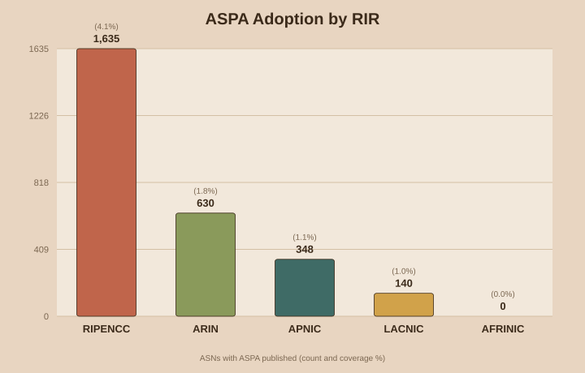
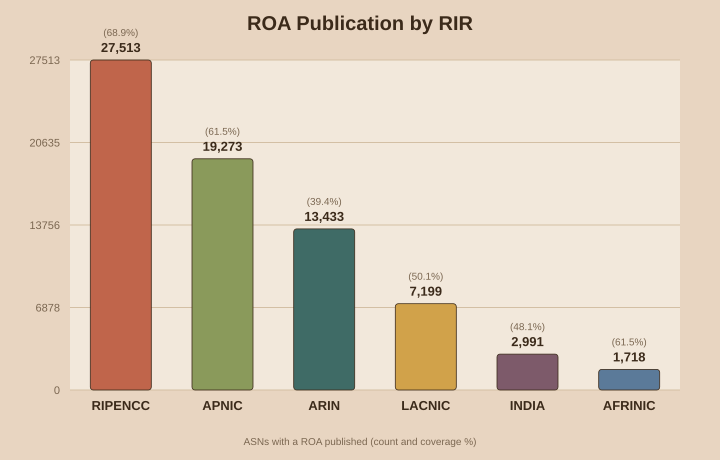
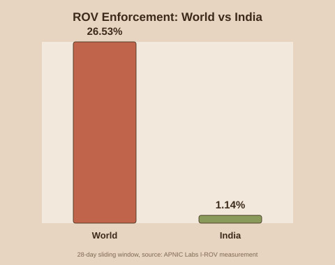
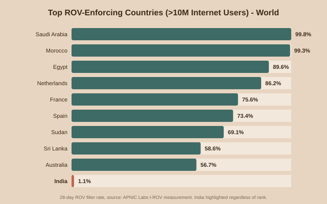
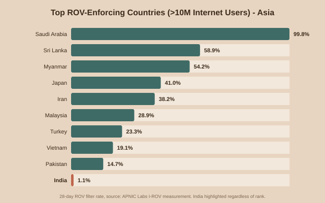
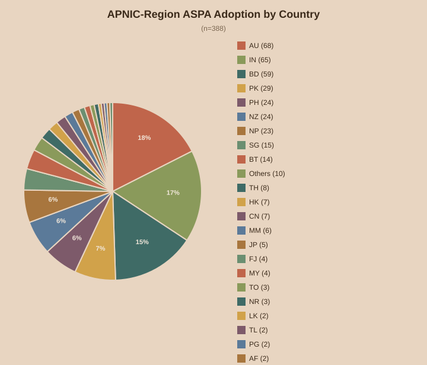
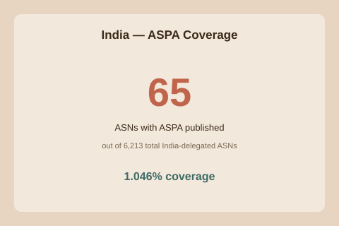

RPKI (Resource Public Key Infrastructure) lets an Autonomous System prove two things with a cryptographic signature instead of just trusting BGP announcements: Whether any ASN is actually allowed to originate any given IP prefix, and whether it is actually allowed to sit in the path as someone's transit provider. A ROA (Route Origin Authorization) covers the first case — it stops one network from announcing someone else's IP range by mistake or on purpose. An ASPA (Autonomous System Provider Authorization) covers the second — it stops route leaks, where a network accidentally forwards a route to the wrong upstream.
As of this refresh, here is ASPA adoption across all five Regional Internet Registries:
| RIR | ASNs with ASPA | Total ASNs | Coverage |
|---|---|---|---|
| RIPENCC | 1,673 | 39,592 | 4.226% |
| ARIN | 512 | 34,022 | 1.505% |
| LACNIC | 107 | 14,249 | 0.751% |
| APNIC | 106 | 31,138 | 0.340% |
| AFRINIC | 0 | 2,753 | 0.000% |

Unlike ASPA, ROA (Route Origin Authorization) is well-established across every RIR. 'ASNs with a ROA' only means an ASN has signed at least one IPv4 or IPv6 resource — it doesn't mean everything that ASN announces is covered. A network with 1 of its 50 announced prefixes signed counts exactly the same as one with all 50 signed, if you only look at that column. The table also shows the actual object count — the total number of individually signed resources (VRPs) per RIR — and the average number of signed objects per covered ASN, which gives a sense of how deep the coverage actually goes, not just how many networks have started.
| RIR | ASNs with ≥1 ROA | Total ASNs | ASN Coverage | Total ROA Objects | Avg No of Obj Covered per ASN |
|---|---|---|---|---|---|
| RIPENCC | 26,886 | 39,592 | 67.908% | 1,402,144 | 52.2 |
| APNIC | 18,957 | 31,138 | 60.881% | 1,161,109 | 61.2 |
| ARIN | 12,742 | 34,022 | 37.452% | 1,047,123 | 82.2 |
| LACNIC | 6,969 | 14,249 | 48.909% | 174,025 | 25.0 |
| INDIA | 2,938 | 6,186 | 47.494% | 41,328 | 14.1 |
| AFRINIC | 1,658 | 2,753 | 60.225% | 119,343 | 72.0 |

The chart above shows the ASN-presence metric only for visual consistency with the ASPA chart.
Publishing a ROA or ASPA only matters if other networks validate against it. ROV (Route Origin Validation) measures that missing piece — not what's published, but what's actually enforced. APNIC Labs runs a continuous global measurement of this using anycast beacon routes delivered to end-user devices via an ad-measurement network: one route is permanently RPKI-valid as a control, another is permanently RPKI-invalid, and APNIC tracks what fraction of a country's users can still reach the invalid one — those users are sitting behind networks that are not dropping invalid routes. (The exact prefixes used aren't publicly disclosed, deliberately — publishing them would let networks treat them a special one rather than genuinely enforcing ROV everywhere. Full methodology: APNIC Labs, "How we measure". Worth noting: independent researchers (in the TORCH paper, which cross-checked APNIC's results against their own multi-prefix measurement) have pointed out that relying on a single invalid test prefix gives only a partial view compared to testing many prefixes simultaneously — treat these numbers as a solid trend indicator rather than an exact figure.)

As of 2026-07-15, 28.34% of internet users globally sit behind networks enforcing ROV.
A handful of major ISPs turning on ROV could protect the majority of a country's users — even users whose own ISP does nothing at all. This is exactly what the inherited-protection mechanism above means in practice: protection cascades downstream through the network, so adoption doesn't need to be universal to have an outsized effect.
For India specifically: if Jio, Airtel, BSNL, Vi, and Tata all turned ROV on, India's score would very likely jump well past 90%, for two different reasons layered together. Jio, Airtel, Vi, and BSNL are mainly retail providers — most of India's actual internet users connect through one of them directly, so their own adoption protects those users immediately, with no inheritance needed at all. Tata Communications is different: it's a major wholesale carrier that many smaller Indian ISPs buy transit from, so its adoption would cascade down to those smaller networks' customers too, protecting people who never touched Tata's network directly. The one thing that would hold the number back from a clean 90%+: any smaller ISP that also buys transit from a second, non-adopting provider as backup would still leak through that second path — so the real ceiling depends on how many of India's smaller networks are single-homed to one of these five versus quietly multihomed elsewhere too. Still, decisions by five companies moving the needle for an entire country is the whole point of this mechanism.
Where does India stand next to the countries doing this best? Here's the same 28-day filter rate, worldwide and then narrowed to Asia, both anchored on India so its position is easy to see either way:


Both lists are restricted to countries with roughly 10 million or more internet users, so small countries with unusually high (or low) numbers don't crowd out the comparison. This candidate list is a manually maintained estimate, not a live feed, and is only recalculated every 48 hours rather than on every refresh, since these rankings don't move much day to day.
Zooming into APNIC specifically — 106 ASNs out of 31,138 total APNIC-delegated ASNs (0.340%) currently publish an ASPA object.

| Country | ASNs |
|---|---|
| IN | 21 |
| AU | 18 |
| PK | 15 |
| NZ | 8 |
| BD | 8 |
| SG | 5 |
| PH | 4 |
| CN | 4 |
| See all 23 countries ▾ | |
21 of India's 6,186 APNIC-delegated ASNs (0.339%) currently publish ASPA. For ROA, the picture is far more mature: 2,938 ASNs (47.494%) publish at least one ROA, covering 41,328 signed resources in total.

| ASN | Organisation | Providers |
|---|---|---|
| AS9885 | National Knowledge Network | 4755, 9498, 11537, 20965, 23855, 24029, 24490, 55836 |
| AS38620 | National Knowledge Network | 55824 |
| AS132278 | Glencore-AS-IN | 4755, 9498 |
| AS133267 | VFVTR-AS | 45117, 139195 |
| AS133298 | NETFLOW-AS-IN | 150593 |
| AS135244 | KNET-AS | 42, 714, 2635, 2906, 3856, 6509, 8075, 9498, 13335, 15169, 20940, 21859, 23879, 26415, 32590, 32934, 54994, 55836, 59200, 133296 |
| AS135775 | PDSPL-AS | 9498, 17762, 18101 |
| AS136308 | Deenet Networks Private Limited | 9498, 9829, 55836 |
| See all 21 ASNs ▾ | ||
If you run a network, here's the plain case for turning these on:
These numbers move slowly, and that's expected — ASPA only protects a network once that network actually publishes it, and that depends on how ready each RIR's tools are and whether individual network operators get around to setting it up. This post keeps refreshing on its own, so come back for the current numbers instead of trusting whatever you read here on any one day.
Data sources: rpki-client console output, APNIC/RIPE/ARIN/LACNIC/AFRINIC delegated statistics files, RDAP lookups against rdap.apnic.net. Auto-refreshed every 24 hours. Snapshot generated: 2026-07-17 06:59 IST.